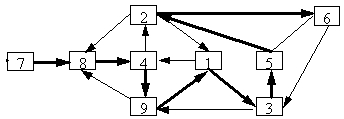

Write out in a row the numbers from 1 to 9 $($every number once$)$ so that every two consecutive numbers give a two-digit number that is divisible by 7 or by 13.
Nothing to translate.
For example, 784913526.
Ideology. We write out all possible two-digit numbers: 14, 21, 28, 35, 42, 49, 56, 63, 84, 91, 98; 13, 26, 39, 52, 65, 78 and draw a graph.
. It is immediately clear that you need to start with 784. Next, you need go through a small number of possibilities, but finding one of the possible options is not difficult